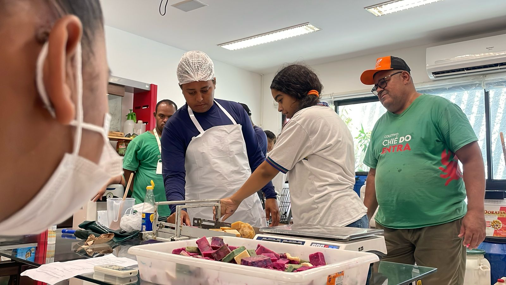

Coleta de óleo e a distribuição de sabão ecológico
A coleta e transformação do óleo usado em sabão é mais uma das iniciativas do Coletivo Chié do Entra que tem gerado grande impacto na comunidade. Até agora, 8 toneladas de óleo foram coletadas, e mais de 60 mil barras de sabão foram distribuídas entre os moradores e comerciantes locais. A parceria com a ASA também tem sido fundamental para garantir que o óleo que não consegue ser processado pelo Chié seja destinado de forma adequada, através de doações e encaminhamentos. O projeto se tornou uma verdadeira rede de apoio, com a colaboração de inúmeros moradores e empreendedores da comunidade.
Um dos destaques dessa ação é o Troca Chié, um processo no qual o morador ou comerciante doa o óleo usado e recebe, em troca, sabão feito a partir do próprio óleo coletado. Essa troca não só ajuda a promover práticas mais sustentáveis, mas também contribui para o fortalecimento da economia local, pois o sabão produzido é utilizado por quem participa do processo. Essa ação tem sido uma solução criativa e eficaz para o reaproveitamento de um resíduo que, quando descartado de maneira incorreta, pode causar grandes prejuízos ao meio ambiente.
Até 2019, a comunidade Entra Apulso não tinha saneamento básico, o que resultava em uma série de dificuldades para o bem-estar e a saúde dos moradores. Após a instalação do saneamento, o óleo usado se tornou um grande vilão, entupindo as tubulações recém-instaldas, pois muitas pessoas não sabiam como descartá-lo corretamente. Para solucionar esse problema, o Coletivo Chié do Entra passou a coletar o óleo de forma sistemática, oferecendo uma solução sustentável e educativa para a comunidade, ajudando a preservar tanto o saneamento quanto o meio ambiente.